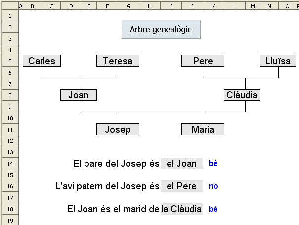
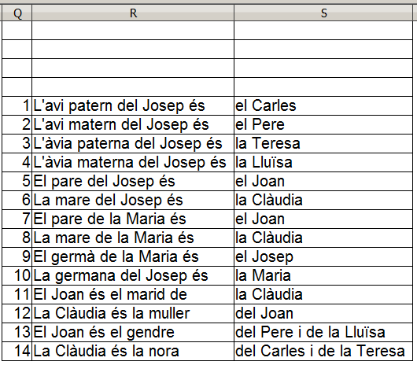

Arbre genealògic
Visió gràfica de l'activitat

Funcions que es fan servir en aquesta activitat
- Operdors de sumar (+) i restar (-)
Objectiu de l'activitat
Treballar les relacions de parentesc.
Desenvolupament de l'activitat:
1. Obrir el fitxer M4 i afegir un nou full amb el nom de M4P6 arbre genealògic
2. Fer que l'amplada de les cel·les del rang B1:O1 sigui d'1cm
3. Connectar les cel·les B5 i C5.
4. Copia la cel·la B5 a les cel·les F5, J5, N5, D8, L8, F11 i J11.
Assignar-hi a aquestes cel·les connectades els següents atributs:
- Color de la lletra: negre
- Tipus de lletra: Arial
- Tipografia: normal
- Mida: 14
- Color de fons: gris 10%
- Alineació horitzontal i vertical: centre
- Fer visibles les línies de les vores de les cel·les connectades
 de la barra d'eines de dibuix.
de la barra d'eines de dibuix.
5. Escriure a les cel·les del rang Q5:S18 el següent:

1a oració
6. Disposant ja de les oracions al rang Q5:S22, escriure =SI($A$1=0;ALEATENTRE(1;14)) a les cel·les Q20, Q21 i Q22.
7. Escriure a la cel·la R20: =CONSULTAV(Q20;$Q$5:$S$18;2)
8. Copiar la cel·la R20 i enganxar-la a la cel·la S20. Cal tenir en compte que després de fer la copia s'ha de canviar l'índex 2 pel 3 ja que es fa la cerca vertical a la tercera columna (S5:S18). Es a dir, el contingut de la cel·la S20 seria: =CONSULTAV(Q20;$Q$5:$S$18;3)
2a oració
9. Copiar la cel·la R20 i enganxar-la a la cel·la R21.
10. Copiar la cel·la R21 i enganxar-la a la cel·la S21. Recordar canviar l'index 2 pel 3.
3a oració
11. Copiar la cel·la R21 i enganxar-la a la cel·la R22.
12. Copiar la cel·la R22 i enganxar-la a la cel·la S22.Recordar canviar l'index 2 pel 3.
13. Escriure a la cel·la B14: =R20. En aquesta cel·la es mostrarà part de la primera oració perquè sigui completada per l'alumne a la cel·la I14
14. Connectar les cel·les B14:H14 amb alineament horitzontal dreta.
15. Connectar les cel·les I14:J14 que serà on caldrà escriure per completar l'oració.
16. Formatar la cel·la I14 com es veu en el gràfic de la presentació de l'activitat.
17. Escriure a la cel·la K14: =SI(I14="";"";SI(I14=S20;"bé";"no"))
19. Escriure a la cel·la B16: =R21
20. Connectar les cel·les I16:J16
21. Formatar la cel·la I16 com es veu en el gràfic de la presentació de l'activitat.
22. Escriure a la cel·la K16: =SI(I16="";"";SI(I16=S21;"bé";"no"))
24. Connectar les cel·les B18:H18 amb alineament horitzontal dreta.
25. Connectar les cel·les I18:J18
26. Formatar la cel·la I18 com es veu en el gràfic de la presentació de l'activitat.
27. Escriure a la cel·la K18: =SI(I18="";"";SI(I18=S22;"bé";"no"))
- Esborrar el contingut de la cel·la I14, I16, I18.
- Assignar a la cel·la A1 el valor de 0
- Que la cel·la I14 rebi el focus.
29. Crear un botó de prémer de Controls de formulari i assignar-li la macro feta anteriorment.
30. Validar la cel·la A1 per al valor 0.
31. Protegir les cel·les que convingui.
32. Protegir la posició i mida de les línies poligonals.
33. Fer que els continguts de les cel·les del rang Q5:S22 no siguin visibles.
34. Comprovar que l'activitat funcioni correctament.
35. Desar el fitxer M4
També en aquesta activitat es podria plantejar que mitjançant una macro es vagin canviant les paraules de les cel·les B5, F5, J5, N5, D8, L8, F11 i J11 per a després presentar oracions per ser completades per l'alumne. D'aquesta manera la maeixa estructura de l'arbre arbre genealògic podria servir per diferents famílies on només caldria canviar els noms. També una possible activitat podria ser ampliar l'estructura de l'arbre genealògic (més nivells).
Com es pot anar veient durant el curs, amb el full de càlcul es poden fer quasi tantes activitats com imaginació se li vagi posant. Només es tracta de combinar i relacionar diferents funcions de manera adient per aconseguir l'objectiu.

|
|

|
|
|